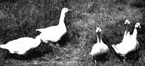

Geese Grow On Grass
For variety, raise at least one other kind of poultry aside from chickens. Consider raising geese, from the Have-More Plan.
By the Mother Earth News editors
March/April 1970
In raising poultry, Ed and I believe chickens are fundamental - they furnish both meat and eggs. But after you are producing broilers in your battery and have a flock of laying hens, you ought to consider raising at least one other kind of poultry for variety's sake.
It is up to you to choose geese, ducks, turkeys, squabs - or something fancy like guinea hens or pheasants. You can easily handle one or maybe two of these in addition to your garden, fruits, chickens, goats and bees. You've probably eaten duck and turkey recently, maybe goose and squab. If you haven't eaten these latter two recently, do so - and then plan on raising what ever you like the best.
We Robinsons believe the goose is tops - best-tasting. Yet it seems to be the forgotten fowl in America. The most common objection we hear is that goose is too greasy. But you don't have to eat all the grease any more than you eat all the excess fat on the best cuts of beef. The first Christmas we were married I roasted a goose (at Ed's insistence!) even though I had never tasted it. I used a prune and apple stuffing to offset the richness and pricked the skin to release fat which could then be poured out of the pan. I have been an ardent goose fan ever since. If you like dark meat, which we think more succulent and tasty than white, you should like goose.
Geese are the cheapest and easiest of all poultry to raise. Extremely hardy, they are rarely affected by any disease or insect pests. After they are two weeks old all they need is plenty of water and grass and they will gain a pound a week until they are about 12 weeks old. They may be eaten at this age and are called "green geese". Geese have no use for fancy housing - a simple 3 sided shed where they can keep dry in the severest winter weather is all they want for they prefer to stay in the open even at night.. As for fencing, any low wall or fence 36 inches high holds them. At breeding time geese make their own nests, hatch their own eggs.
I n Europe and Asia geese have been highly valued for centuries. As far back as 4000 years ago the Egyptians used goose liver to cure night blindness - and they were right, for scientists now know goose liver is exceptionally rich in Vitamin A because geese eat such large quantities of green grass. Before the war Europeans raised more than 100 million geese a year.
If you live in a closely populated section you will not find geese desirable as their call is a noisy one and they are easily disturbed. In fact, they make good "watch dogs". If you want to keep feed at a minimum, 1/2 acre of good grass will support 8 to 10 large geese. Of course, you can keep them in smaller areas and supplement their grass with waste greens, vegetables or fruit and a little grain. Oats make a good grain. Geese need sand, grit and oyster shell. for egg laying and digestion's sake. But from early spring till winter, it is grass and water than they prefer. If you supply those two things, your geese will virtually raise themselves.
You can start having geese by buying fertile eggs, day-old goslings, "started" goslings, or a matured pair or trio at least two years old. We could find no geese true-to-breed in our section so we bought eggs (35 cents to $1.00 each) and hatched them under setting hens. It was one of the biggest thrills we have ever had - to see those little goslings hatch out. Here are the rules we would suggest after our experience:
1. Don't pay too much attention to all the free advice you'll get unless it comes from someone who has successfully handled geese for several years or from the Department of Agriculture or State Experiment Station.
2. Order your eggs from a reputable dealer suggested by your county farm agent or one who advertises in a good farm magazine. 3. Get your broody hens promised to you ahead of time by a large poultry keeper if you don't have any of your own. You may buy or borrow them. One hen covers 4 to 5 goose eggs. Move and place the hens on their new nests at night and keep the nest darkened.
4. When you make up the nests, dust them thoroughly with insect powder. Also dust the hens well a day or two before the eggs hatch. (You may use an orange crate on its side for 2 nests if you place a narrow board across the front to keep the eggs from rolling out).
5. Goose eggs, contrary to the usual practice, may be washed before setting. Turn the eggs once a day (when the hen is off her nest) as they are too large for hens to manage.
6. Take good care of your hen and her eggs. It takes from 28 to 35 days for eggs to hatch - a long setting for a hen. Take her off her nest once a day and give her grain and water. Be sure food and water is close so she won't wander off and forget her nest. A hen on goose eggs should not be off nest long enough for eggs to chill.
During the last week sprinkle the eggs with lukewarm water each day. The day before hatching place the eggs in a pan of warm water to cover eggs well and watch your live goslings bob. After a few bobs replace eggs in nest and nature does the rest. (You furnish water to duplicate what occurs when a goose returns to her nest with her feathers a little wet.) If the egg should show the first crack of hatching, don't submerge the broken part. It can take a gosling as long as 24 hours to hatch after the first tiny crack in the shell, so don't be worried. Even if a gosling's head has emerged, the European custom is to push the head back into the shell so the gosling can obtain leverage to extricate himself. Take goslings from nest as soon as they hatch; place in a box and keep in a warm place until the hen completes her hatch. It is best to remove goslings because the hen is apt to get excited at the first hatch, leave the rest of the eggs unhatched.
After you have hatched the goslings or if you buy them, keep them in a box with a few cloths in it in the house or some other warm place. A few hours after they are born feed them some chopped green feed - grass, lettuce, etc. - natural food for geese. Stale bread soaked in milk and sprinkled with a little sand, or a warm mash or chick starter may be fed. After the first day or so when they learn to manage their legs, put them out on the grass during the day - provided the weather is warm. But be sure to keep them in a warm dry shelter at night and don't let them out until the dew is off the ground. It is wise to let them have their box or shelter at night until they are well-feathered - at least 3 weeks old.
Care of Mature Geese
Buying matured geese ready for breeding is the most expensive way to start your flock, a good trio costing $25-$35. However, if you decide to do this, it's best to mate just a pair, even though it is common to have a trio of 1 gander and 2 geese. Geese prefer to live a monogamous life, in contrast to other birds. After they once mate, they are faithful to each other for years so don't reak up their happy union. Buy your geese and pair them in the fall so they will be settled and ready to lay in February (the usual time in mild climates.) Your goose and gander should both be 2 years old to be fully matured and to produce fertile eggs.
The difficult aspects of raising geese are to get fertile eggs and proceed properly with the hatching. Your success or failure begins with the gander. He prefers living with but one female - although sometimes he'll take up with two. But the gander and goose usually must live together some months before they will mate. Although water isn't absolutely necessary, some kind of a little pool (see Chapter on Ducks for making pool) or stream is good because geese breed more easily in water. Once you have fertile eggs, be sure that the hen or goose you set them under is really broody. Start her setting on some hen eggs for a couple of days to make sure she's really serious about hatching a family before trusting your geese eggs to her.
All the laying goose needs is a barrel or box on its side or some simple shelter and the goose will fashion her nest out of straw, twigs and her own goose down. The average goose of the heavy breeds can lay about 20 eggs, but is able to cover only 12 to 15, so remove the first eggs if you want her to continue laying more than she can set on. After she stops laying and becomes really broody see that she has as many eggs as she can cover well. Then, provided she has water (say, a large pond) so eggs will receive proper moisture, you can relax and let her hatch her own eggs. She'll turn them and do everything necessary.
We find geese are friendly and like to follow us around the yard, except during the mating and hatching season when it's best to stay away from the gander. Geese are fearless and will attack anything - you needn't worry about a rat, cat or dog bothering them.
Choosing a Breed
Every small flock we have seen seemed to be some kind of mixture stemming mostly from the gray and white Toulouse goose. We chose the Embden because my wife wanted all white Toulouse goose. The other two best known breeds in this country are the African and Chinese. Both have distinctive knobs on their heads. The African is brown, apt to be noisy. Chinese geese may be white or fawn, weigh from 10 to 12 lbs., are apt to be noisy. They belong to the exhibition breeds.
Though we don't expect you to go into the business of raising geese we thought you might like to know that the commercial by-products of the goose are exceptional. When geese are specially fattened they develop large livers which can be made into the famous "pate de foie gras" which means "patty of fattened goose liver".
You know how goose feathers are valued in pillows and upholstery, but did you know they are widely used in artificial flowers, Christmas tree decorations, fish lures, powder puffs, and many other things? And goose skins are also used in one kind of powder puff besides their more familiar use as cracklings. And that "awful goose fat" we hear about so much is known to many people as "schmaltz" - is exquisite in taste and highly regarded by knowing cooks for pastry shortening, bread spread and other cooking.
Some people like "schmaltz" plain as a bread spread - or if that is too fat, you can make a Swedish bread spread. Cover bottom of skillet with goose fat, add finely chopped onion (1 large) and unpeeled apple (about 3 medium), brown slightly. Add 1/2 cup goose fat and simmer over very low flame until onion and apple are soft. Then place in container and in refrigerator where it will keep a long time. Use cool.
To make plucking easier dissolve 2 cakes of paraffin (poultry plucking wax obtainable from a poultry supply house is better than ordinary paraffin) in a large kettle of boiling water. Dunk the goose thoroughly in this mixture immediately after it is killed and bled. Then start plucking right away. The paraffin ruins the feathers for future use, but if you really want the down you can dry pick.
Despite the difficulty of picking, we think the goose is a wonderful bird!
Suggested Reading:
Starting Right With Geese, $1.25
 Carolyn and Jackie get a close-up of a new member of the "family" - a day-old gosling. He came out of the shell yesterday. Today he is able to shift for himself quite well. A setting hen hatched him. Four or five goose eggs can be hatched (in 28-35 days) under a hen while the poor goose goes on laying more eggs. |
 The young geese are 8 weeks old - half-grown and weigh about 9 pounds. The pair of breeders (at left) are two years old. Geese are extremely healthy, eat grass, and practically raise themselves. |
We bought this little poultry house and the scratch shed (at right) for our original backyard flock of 7 laying hens. It cost $28.00. Since then we've used it as a coop to fatten boilers and as a shelter for our geese. |